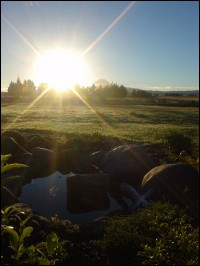

Tongariro – one step closer
There are a few locations in New Zealand that make me feel very close to my Maker. Ocean Beach in Hawkes Bay (when it’s not crowded) is one of those spots; my family’s farm in North Canterbury is another; and the most recent addition to this list is the Tongariro Crossing.
The beauty of this one-day hike lies in its variety. For starters, there’s the variety of terrain. Going in the conventional direction you cross flat tussock land, traverse an almost vertical rocky slope, walk past a volcano crater (where the earth is warm to the touch), slide down a track of black ash, and descend through tundra followed by bush.
Then there’s the variety in the weather. One minute you can be drenched in sweat and pouring on the sunscreen, the next you’re frantically digging in your pack for the swanndri. Thankfully, both extremes have their advantages. Sunny weather reveals stunning vistas – you can’t help but take perfect photographs, while wet weather creates a surreal, almost magical atmosphere.
And I must mention the variety of people. There are hundreds (sometimes literally) of other people walking the Tongariro Crossing, whatever the weather – testament to its magnificence, I suppose. The first time I did the Crossing I came across the following: French (or were they Swiss?) tourists asleep in a hut, an elderly couple (still very much in love, I imagined) carefully picking their way down the ash slope, two 17 year old girls who had camped overnight in a crater, a park ranger on his way to visit the girls, plus dozens of friendly fellow hikers ready to give a wave and “Guten tag!”, “Dag!”, “Bonjour!” or maybe even “Hello!”
If you’re thinking of doing the Crossing, be prepared to feel overwhelmed at the bottom of the first climb; be prepared to feel exasperated at having to carry a pack full of winter clothes in 30 degree heat; be prepared to drive for hours only to be rained off and forced to return home without even getting to the start of the track.
But also be prepared to feel like you’re walking on the moon as you traverse the volcano; be prepared to feel like you’ve been dropped into a C. S. Lewis fantasy as you stare at the Emerald Lakes; be prepared to stop for a second and pretend you’re a character from Lord of the Rings as you pop out above the bush line and look out over the rolling green.
In short, be prepared to take one step closer to God.